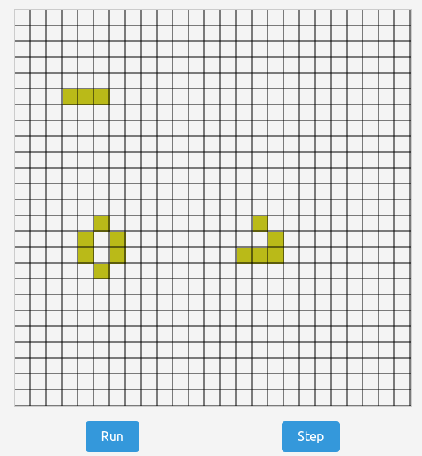
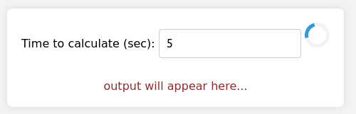
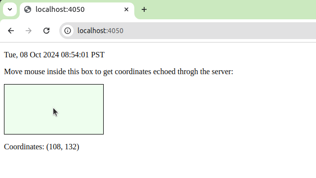
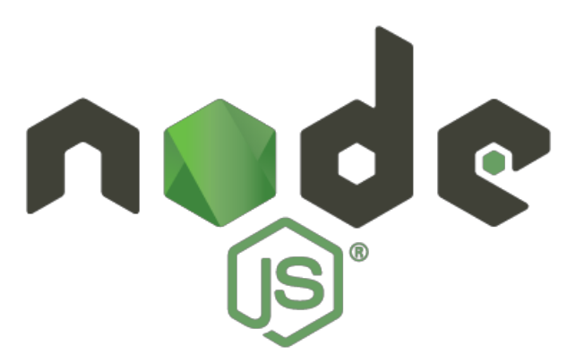

Recently I've had to compile Go to WebAssembly to run in the browser in a couple of small projects (#1, #2), and in general spent some time looking at WebAssembly. I find WebAssembly to be an exciting technology, both for the web and for other uses (e.g. with WASI); specifically, it's pretty great that we can take existing projects and components written in Go and run them in the browser.
In this post, I will summarize some useful patterns in running Go in the browser via WebAssembly. All the patterns are demonstrated by small, self-contained programs you can find in this GitHub repository.
Basics: calling Go from JS
This sample serves as the basis for other samples in this post: let's write a Go function that we'll call in the browser using JS. This function uses Go's math/big stdlib package to calculate the sum of the harmonic series for some duration [1], and returns the result with high precision:
// calcHarmonic calculates the harmonic series for approximately the given
// number of seconds and returns the accumulated result in a string.
func calcHarmonic(nsecs float64) string {
d := time.Duration(nsecs * float64(time.Second))
start := time.Now()
r1 := big.NewRat(1, 1)
for i := 2; ; i++ {
addend := big.NewRat(1, int64(i))
r1 = r1.Add(r1, addend)
if i%10 == 0 && time.Now().Sub(start) >= d {
break
}
}
return r1.FloatString(40)
}
To export this function to JS in the browser, we add the following code:
func main() {
// Export the name "calcHarmonic" to JS, with our wrapper as value
js.Global().Set("calcHarmonic", jsCalcHarmonic)
// The Go main function compiled to WASM is expected to block
// indefinitely.
select {}
}
// wrap calcHarmonic to be callable from JS
var jsCalcHarmonic = js.FuncOf(func(this js.Value, args []js.Value) any {
if len(args) != 1 {
panic("want one argument")
}
s := calcHarmonic(args[0].Float())
return js.ValueOf(s)
})
This Go file is compiled to the WASM/js target with:
GOOS=js GOARCH=wasm go build -o harmonic.wasm harmonic.go
And load it from JS:
// Instantiate a new Go object (defined in from wasm_exec.js)
const go = new Go();
WebAssembly.instantiateStreaming(fetch("harmonic.wasm"), go.importObject).then(
(result) => {
go.run(result.instance);
});
The JS code that calls calcHarmonic is:
let buttonElement = document.getElementById("submitButton");
document.getElementById("submitButton").addEventListener("click", () => {
let input = document.getElementById("timeInput").value;
let s = calcHarmonic(parseFloat(input));
document.getElementById("outputDiv").innerText = s;
});
Finally, the wasm_exec.js file from the Go distribution has to be included with something like:
<script src="wasm_exec.js"></script>
The easiest way to obtain this file is download it from the Go project's GitHub mirror (for the same Go version your Go code is compiled with); this is handled by the Makefile in our sample project:
wasm_exec.js:
wget https://raw.githubusercontent.com/golang/go/release-branch.go1.22/misc/wasm/wasm_exec.js
This is the basic recipe for invoking Go from JS in the browser: the Go code is platform-agnostic and presents some API and all the glue logic is done in JS. The next samples show some variations on this basic scheme.
DOM manipulation from Go
In the previous example, Go implemented the calcHarmonic function, but the rest of the program's logic was in JS - setting up an event listener for a button click, updating output, etc.
We can move more of the code to Go, if we want. The calcHarmonic remains unchanged, but our main function in Go becomes:
func main() {
doc := js.Global().Get("document")
buttonElement := doc.Call("getElementById", "submitButton")
inputElement := doc.Call("getElementById", "timeInput")
outputElement := doc.Call("getElementById", "outputDiv")
buttonElement.Call("addEventListener", "click", js.FuncOf(
func(this js.Value, args []js.Value) any {
input := inputElement.Get("value")
inputFloat, err := strconv.ParseFloat(input.String(), 64)
if err != nil {
log.Println(err)
return nil
}
s := calcHarmonic(inputFloat)
outputElement.Set("innerText", s)
return nil
}))
select {}
}
We obtain JS values from the js.Global() context and can call functions or set attributes on them. If you squint, this looks very similar to JS code, but written in Go-ish.
This code sample demonstrates some useful capabilities of DOM manipulation in Go:
- Adding event listeners on DOM elements, with Go callbacks
- Getting values from DOM elements
- Setting attributes on DOM elements
The only code JS remaining in our index.html is the WebAssembly loader:
const go = new Go();
WebAssembly.instantiateStreaming(fetch("harmonic.wasm"), go.importObject).then(
(result) => {
go.run(result.instance);
});
All the rest is done in Go! Link to the full code for this sample.
For a more full-featured sample, check out this directory. It implements a simple Game of Life running in the browser, entirely in Go. All the game logic, canvas manipulation and event management is done in Go; here too, the only JS code in the project is the few lines used to load the WebAssembly module.
I personally prefer keeping the UI logic in JS, but if you're interested in Go purity all the way - it's definitely feasible.
Using TinyGo as an alternative compiler
The Go compiler's support for WebAssembly is pretty good these days, but there's a small snag that may be important to users: the entire Go runtime is compiled into the WASM binary. On my machine, the .wasm files produced for the sample Go code weigh in at around 2.5 MiB, which will take some time to load in the browser - especially on slow connections [2].
There's an alternative: TinyGo is a Go toolchain "for small places", specializing in embedded controllers; the same considerations apply to WASM. The TinyGo runtime is lightweight compared to Go, and the binaries are about 1/4 the size. Not everything is perfect with TinyGo, though: compilation is much slower, and the resulting code is a bit slower as well. Finally, TinyGo has some limitations that make stdlib packages that rely on reflection not work; this can be painful when interacting with JS because encoding/json relies on reflection - so you may need to look for an alternative JSON package.
The dom-in-go sample directory also shows how to build the project with TinyGo; take a look at the Makefile. Note that TinyGo has its own wasm_exec.js support file - it won't work with the one taken from the standard Go distribution; the Makefile handles this too.
Keeping the main thread free: WebAssembly in a web worker
If we come back to the original sample and run the calculation for some non-trivial amount of time (say, 2 seconds or more) - you may notice something: the page appears "frozen" while the calculation is running. You can't interact with the UI in any way, can't select text with the mouse; if you try to add periodic console.log printouts or some spinner animation - nothing will show until calcHarmonic returns with the result.
This is the expected behavior for JS when it calls a blocking, CPU-intensive function! Let's revisit the code again:
let buttonElement = document.getElementById("submitButton");
document.getElementById("submitButton").addEventListener("click", () => {
let input = document.getElementById("timeInput").value;
let s = calcHarmonic(parseFloat(input));
document.getElementById("outputDiv").innerText = s;
});
The highlighted line will block the main thread for 2+ seconds, but the main thread in JS is also used for all the UI interaction. This is one of the most common manifestations of function coloring problem - blocking is problematic. Luckily, all modern browsers support Web Workers - isolated threads that can execute concurrently.
It's not hard to make web workers work with WebAssembly, which is what our next demo shows. The main HTML file includes, in addition to the UI logic:
const worker = new Worker("worker.js");
worker.onmessage = ({ data }) => {
let { action, payload } = data;
switch (action) {
case "log":
console.log(`worker.log: ${payload}`);
break;
case "result":
resultReady(payload);
break;
default:
console.error(`Unknown action: ${action}`);
}
};
Where worker.js is:
importScripts("wasm_exec.js");
console.log("Worker is running");
// Load the WASM module with Go code.
const go = new Go();
WebAssembly.instantiateStreaming(fetch("harmonic.wasm"), go.importObject).then(
(result) => {
go.run(result.instance);
console.log("Worker loaded WASM module");
}).catch((err) => {
console.error("Worker failed to load WASM module: ", err)
});
onmessage = ({ data }) => {
let { action, payload } = data;
postMessage({
action: "log",
payload: `Worker received message ${action}: ${payload}`,
});
switch (action) {
case "calculate":
let result = calcHarmonic(payload);
postMessage({ action: "result", payload: result });
break;
default:
throw (`unknown action '${action}'`);
}
};
(The Go code remains unchanged.)
We see that the worker does the WebAssembly loading now, meaning that the Go code executes in a separate thread and the UI thread is free to run while the computation is ongoing. This sample adds a spinner that animates until the web worker returns calcHarmonic's answer, to show the effect.
Talking on a Web Socket with Go
A few years ago I published a sample of a Go server talking via web sockets with JavaScript client code. Well, since the theme here is porting all client code to Go, how about we replace that JavaScript client with yet more Go?
This turns out to be fairly simple - not much different from the "DOM manipulation in Go" section, in fact. But there are some nuances I want to cover.
The application is simple - we display a box, and whenever there's mouse movement over the box, the client sends messages to the server via a web socket; the server echoes the message back and the client uses it to update a text div:
The server code is standard Go using the golang.org/x/net/websocket package. On the client, however, we have to use browser APIs. Here's the interesting part of the code:
const wsServerAddress = "ws://127.0.0.1:4050"
// These are equivalent to the following in JS:
//
// ws = new WebSocket(addr) ...
//
wsCtor := js.Global().Get("WebSocket")
wsEcho := wsCtor.New(wsServerAddress + "/wsecho")
wsTime := wsCtor.New(wsServerAddress + "/wstime")
To send on a web socket, we'll use this function:
// wsSend sends a message on a web socket; the web socket must be active and
// open (otherwise wsSends logs an error and doesn't send anything).
// The message will be serialized to JSON prior to sending.
func wsSend(sock js.Value, msg any) {
if !sock.IsNull() || sock.Get("readyState").Equal(js.Global().Get("WebSocket").Get("OPEN")) {
b, err := json.Marshal(msg)
if err != nil {
log.Fatal(err)
}
sock.Call("send", string(b))
} else {
log.Println("socket is not open")
}
}
And here's how receiving looks, registering the message event listener:
wsEcho.Call("addEventListener", "message", js.FuncOf(
func(this js.Value, args []js.Value) any {
event := args[0]
var ev Event
if err := json.Unmarshal([]byte(event.Get("data").String()), &ev); err != nil {
log.Fatal(err)
}
coordMsg := fmt.Sprintf("Coordinates: (%v, %v)", ev.X, ev.Y)
outputElement.Set("innerText", coordMsg)
return nil
}))
As before, this is just straightforward translation of JS into Go [3]. Note something interesting that's going on here: we have two different Go programs, talking over web sockets with each other using completely different underlying libraries. One uses a Go-native implementation of web sockets; the other uses the browser implementation, exposed via a JS API. In a realistic program, it would make sense to abstract over these details so the same code could be used to send/receive data over web sockets, whether it runs on the server or the client.
Testing locally with Node.js
This section isn't strictly about "running in the browser", but it covers the important topic of local testing. Sometimes we don't want the browser in the loop for our tests; well, good news - we can leverage Node.js's ability to load and execute WebAssembly modules to run GOOS=js GOARCH=wasm Go binaries locally!
The intersting tidbit here is that we can leverage special support implemented in the Go toolchain to make these invocations similar to running/testing regular Go programs. Here's an excerpt from go help run describing it:
By default, 'go run' runs the compiled binary directly: 'a.out arguments...'.
If the -exec flag is given, 'go run' invokes the binary using xprog:
'xprog a.out arguments...'.
If the -exec flag is not given, GOOS or GOARCH is different from the system
default, and a program named go_$GOOS_$GOARCH_exec can be found
on the current search path, 'go run' invokes the binary using that program,
for example 'go_js_wasm_exec a.out arguments...'. This allows execution of
cross-compiled programs when a simulator or other execution method is
available.
The Makefile in our sample handles this fully; we can run a test like this locally, without opening the browser:
//go:build js && wasm
package main
import (
"log"
"syscall/js"
"testing"
)
func TestJSArr(t *testing.T) {
log.Println("hello from test in js/wasm")
objs := js.Global().Call("eval", `({
arr: [41,42,43],
})`)
arr := objs.Get("arr")
if got := arr.Length(); got != 3 {
t.Errorf("got %#v, want %#v", got, 3)
}
if got := arr.Index(1).Int(); got != 42 {
t.Errorf("got %#v, want %#v", got, 42)
}
}
With an invocation like:
GOOS=js GOARCH=wasm go test -exec=supportfiles/go_js_wasm_exec -v .
Link to the full code for this sample.
| [1] | The harmonic series is known to diverge, but very slowly. You need over 200 million elements to get to the sum of 20, etc. (see A004080). |
| [2] | There are some additional mitigations we can explore, like compressing the WASM binary. This is outside the scope of this post, and it applies to the TinyGo output as well. |
| [3] | To be honest, this makes me appreciate JS as an extension language. It has such a simple ABI! Everything is an object, and we can get/set object properties (which can be other objects), and call functions/methods - that's all we need to access all of the browser APIs. |